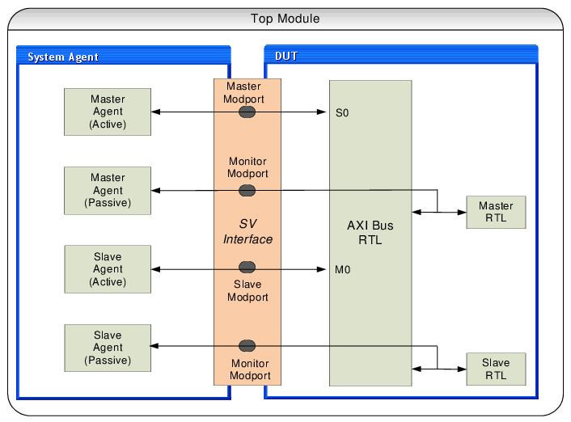

In this scenario, DUT is a system with multiple AXI masters, slaves and interconnect. The VIP is required to provide background traffic on some ports, and to monitor on ports.
Assuming that the AXI System DUT has two master ports and two slave ports. VIP is required to provide background traffic to ports S0 and M0. All the ports need to be monitored. Configure the AXI System Env to have two master agents and two slave agents. Configure the master agent connected to port S0, and slave agent connected to port M0 as active. Configure the master agent connected to port M1 and slave agent connected to port M1 as passive. All the agents would continue to perform passive functions such as protocol checking and coverage.
Figure 9‑7 System DUT with Mix of Active and Passive VIP

Implementation of this topology requires the setting of the following properties:
Assuming instance name of system configuration is "sys_cfg".